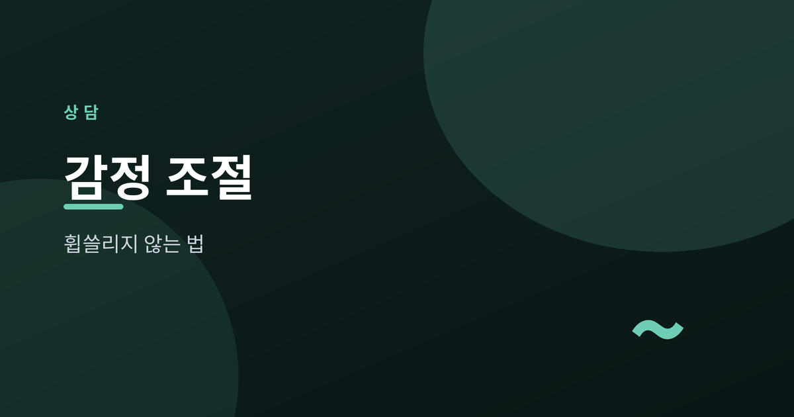
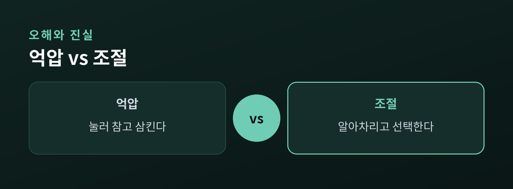
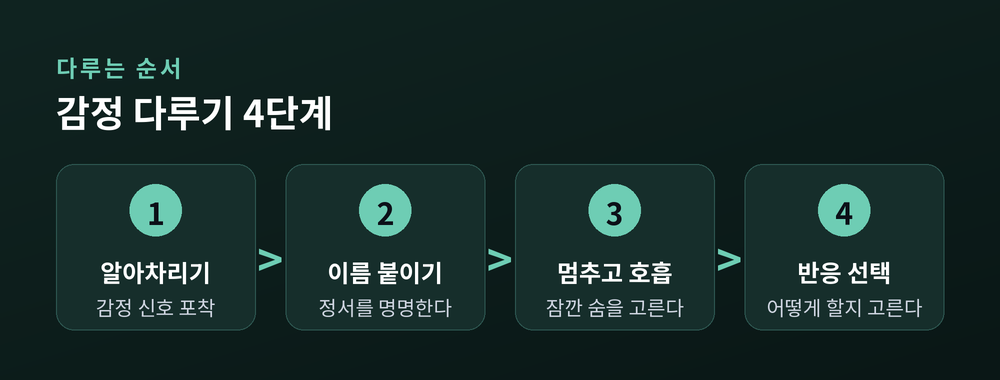
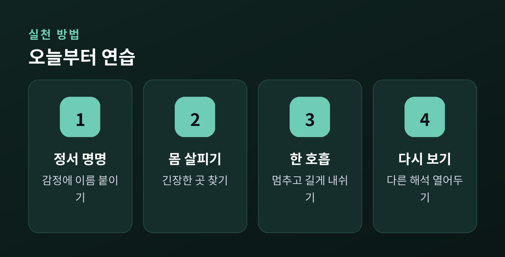
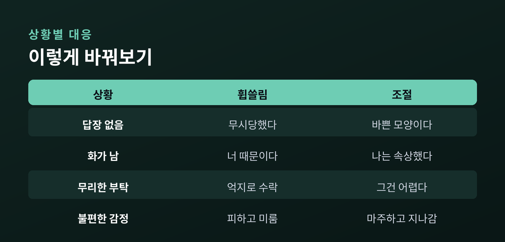

감정에 휩쓸리지 않고 다루는 법

이번 글에서는 감정 조절을 정리해 보겠습니다. 감정을 눌러 없애는 기술이 아니라, 감정과 함께 지내는 태도에 관한 이야기입니다.
우리는 하루에도 여러 번 감정에 흔들립니다. 문제는 감정 그 자체가 아니라, 감정에 끌려다니는 순간입니다. 그 순간을 조금 다르게 다루는 법을 살펴보려 합니다.
많은 분이 감정 조절을 '참는 것'으로 오해합니다. 화가 나도 티 내지 않고, 슬퍼도 삼키는 일이라고 여깁니다. 그러나 눌러둔 감정은 사라지지 않습니다. 어딘가에 고여 있다가 엉뚱한 곳에서 터집니다.
감정 조절은 억압이 아닙니다. 감정을 인식하고, 받아들이고, 반응을 선택하는 과정입니다.
예전엔 감정을 적으로 여겼습니다. 지금은 신호로 봅니다. 감정은 지금 내게 무엇이 중요한지 알려주는 안내판인 셈입니다. 그 신호를 없앨 필요는 없습니다. 다만 신호에 곧바로 휩쓸리지 않으면 됩니다.

감정이 밀려올 때, 우리는 종종 그것이 무엇인지도 모른 채 휘둘립니다. 그저 '기분이 나쁘다'고만 느낍니다.
여기서 한 걸음이 정서 명명입니다. 지금 느끼는 감정에 정확한 이름을 붙이는 일입니다. "나는 화가 났다"가 아니라 "나는 무시당한 것 같아 서운하다"처럼 구체적으로요.
이름을 붙이면 감정과 나 사이에 작은 틈이 생깁니다. 감정에 빠져 있던 상태에서 감정을 바라보는 상태로 옮겨 갑니다. 그 틈이 바로 선택의 공간입니다.
처음에는 어색합니다. 내 감정을 언어로 옮기는 일이 낯설기 때문입니다. 그래도 반복하다 보면, 막연하던 덩어리가 또렷한 모양을 갖추기 시작합니다.
감정은 생각보다 몸에서 먼저 드러납니다. 어깨가 굳고, 숨이 얕아지고, 속이 조여옵니다. 머리로 "화가 났다"고 알기 전에, 몸은 이미 신호를 보내고 있습니다.
그래서 신체 반응을 알아차리는 연습이 중요합니다. 지금 내 몸 어디가 긴장했는지 가만히 살펴보시길 권합니다. 목인지, 가슴인지, 배인지요.
몸의 신호를 일찍 알아차리면, 감정이 폭발하기 전에 손을 쓸 수 있습니다. 감정을 다스리는 일은 머릿속만의 일이 아닙니다. 몸을 함께 살피는 일이기도 합니다.

감정이 가장 뜨거운 순간에 내린 결정은 대개 후회로 남습니다. 그래서 필요한 것이 '잠깐 멈춤'입니다.
화가 치밀 때, 곧바로 말하거나 행동하지 않습니다. 잠시 멈추고 천천히 숨을 들이쉽니다. 길게 내쉽니다. 몇 번만 반복해도 몸의 흥분이 조금 가라앉습니다.
이 짧은 멈춤이 하는 일은 단순합니다. 자극과 반응 사이에 공간을 만드는 것입니다. 그 공간에서 우리는 비로소 '어떻게 반응할지' 고를 수 있습니다.
거창한 기법이 아닙니다. 한 호흡의 여유가 많은 것을 바꿉니다.

감정은 상황 자체보다, 상황을 해석하는 방식에서 나옵니다. 같은 일도 어떻게 받아들이느냐에 따라 감정의 색이 달라집니다.
인지적 재평가, 즉 리프레이밍은 그 해석을 다시 살펴보는 일입니다. 상대가 답장을 안 했을 때 "나를 무시한다"고 볼 수도 있고, "바쁜 모양이다"라고 볼 수도 있습니다. 어느 쪽이 사실인지는 아직 모릅니다.
리프레이밍은 억지로 긍정하는 일이 아닙니다. 하나의 해석에 갇히지 않고, 다른 가능성도 열어두는 일입니다.
물론 늘 성공하지는 않습니다. 감정이 너무 셀 때는 관점을 바꾸기가 어렵습니다. 그럴 땐 앞서 말한 멈춤과 호흡이 먼저입니다. 몸이 가라앉은 뒤에야 생각의 방향도 바뀝니다.

감정을 다룬다는 것이 곧 감정을 숨긴다는 뜻은 아닙니다. 필요한 감정은 표현해야 합니다. 다만 방식이 중요합니다.
"너 때문에 화가 났다"보다 "그 말을 들었을 때 나는 속상했다"라고 말해 보시면 좋겠습니다. 상대를 탓하는 대신 내 상태를 전하는 방식입니다. 같은 감정이라도 훨씬 부드럽게 전해집니다.
경계를 세우는 일도 감정 조절의 일부입니다. 무리한 요구에 "그건 어렵다"고 말하는 것은 이기심이 아닙니다. 나를 지키는 정당한 표현입니다.
회피는 잠깐 편할 뿐입니다. 불편한 감정을 피하고 미루면, 당장은 조용해집니다. 그러나 다루지 못한 감정은 반드시 다시 찾아옵니다. 피하지 않고 마주할 때, 감정은 비로소 지나갑니다.
정리하면 이렇습니다. 감정 조절은 감정을 없애는 기술이 아니라, 감정과 나 사이에 공간을 두는 태도입니다. 알아차리고, 받아들이고, 반응을 고르는 일입니다.
한 가지만 덧붙이겠습니다. 감정 조절의 어려움이 일상과 관계를 크게 해치고 있다면, 혼자 애쓰지 마시고 전문 상담사나 정신건강 전문가의 도움을 받으시길 권합니다. 도움을 청하는 일은 약함이 아니라 나를 돌보는 용기입니다.
감정에 휩쓸리지 않는 사람이 되기는 어렵습니다. 그러나 휩쓸린 뒤 다시 중심으로 돌아오는 연습은 누구나 할 수 있습니다.